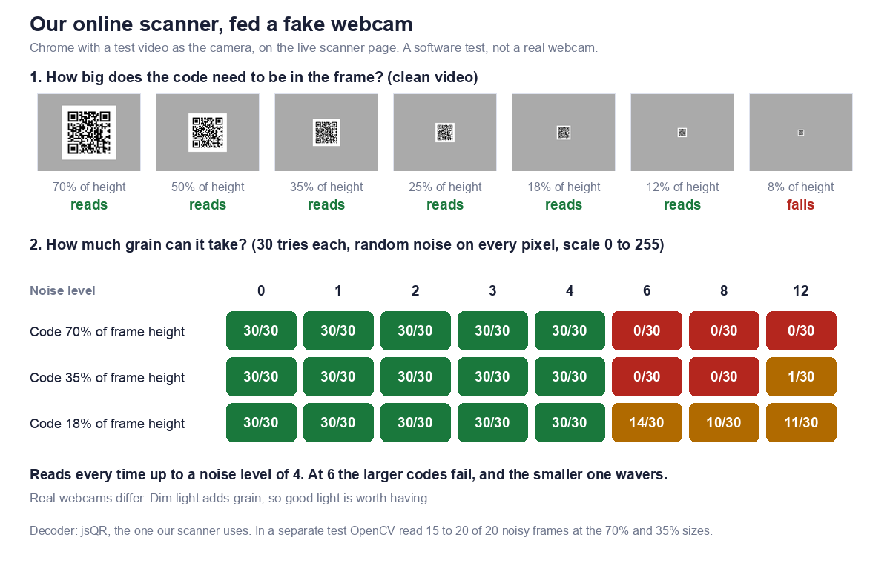

The short answer
What "without an app" means
A QR code is read by a camera or by software looking at a picture. You can do that in a normal web page, so nothing has to be installed, or with the camera that already ships on your phone. An online QR scanner is simply a web page that does the reading.
The three ways at a glance
| Way | Best when | You need |
|---|---|---|
| 1. Upload, drag or paste an image | The code is already a picture, such as a screenshot or a photo | A browser |
| 2. Webcam in the browser | The code is printed and you are at a laptop or desktop | A browser and a camera |
| 3. Phone's built-in camera | The code is printed and you have your phone | A recent phone |
Way 1: Upload, drag or paste an image
How to do it
Open our online QR code scanner. Choose an image file, drag one onto the box, or paste a copied image with Ctrl+V or Cmd+V. It shows what the code contains, and only then offers a button to open a link.
When to use it
Whenever the code reached you as a picture: a screenshot, a forwarded photo, or a file in your downloads. You cannot point a camera at your own screen, so this is the way that works.
If it finds nothing
Almost always the picture is the problem rather than the code. We tested which quick fixes rescue a picture that will not read, in scan a QR code from an image. For the phone routes, see scanning from a screenshot.
Way 2: Use your laptop or desktop webcam
How to do it
- Open the scanner and press Use camera.
- Your browser asks for permission to use the camera. Allow it.
- Hold the printed code in front of the webcam and keep it still.
The scanner page says the video never leaves your device. The permission prompt is the browser's, so you can refuse it, and the scanner then suggests uploading a photo instead.
What we tested
We cannot hold a code up to every webcam, so we did the next best thing. We started Chrome with a video file standing in for the camera, opened our live scanner page, pressed Use camera, and watched whether it read the code. We repeated it with the code filling less and less of the frame. This is a software test, not a real webcam.

Size in the frame
With a clean picture the scanner read the code at every size from 70% of the frame height down to 12%, and failed at 8%. At 12% on a 640 by 480 frame the code was only about 57 pixels wide. So in good conditions you do not need to hold the code close.
| Code size in frame | 70% | 50% | 35% | 25% | 18% | 12% | 8% |
|---|---|---|---|---|---|---|---|
| Scanner result | Reads | Reads | Reads | Reads | Reads | Reads | Fails |
Grain is what to watch
A real webcam in a dim room produces grain. To mimic that we added random noise to every pixel of every frame, 30 tries at each level.
| Code size | 0 | 1 | 2 | 3 | 4 | 6 | 8 | 12 |
|---|---|---|---|---|---|---|---|---|
| 70% of frame height | 30/30 | 30/30 | 30/30 | 30/30 | 30/30 | 0/30 | 0/30 | 0/30 |
| 35% of frame height | 30/30 | 30/30 | 30/30 | 30/30 | 30/30 | 0/30 | 0/30 | 1/30 |
| 18% of frame height | 30/30 | 30/30 | 30/30 | 30/30 | 30/30 | 14/30 | 10/30 | 11/30 |
It read every try up to a noise level of 4, then dropped sharply at 6. The larger codes failed outright, and the smaller one only wavered. Our scanner uses the jsQR decoder, and in a separate test OpenCV, a different decoder, read most of the same noisy frames at the larger sizes. So this is a property of one decoder, not of QR codes.
What to do with that. Do not trust our synthetic noise scale to match your webcam, because real cameras differ. The practical lesson is simpler: light matters, and if the live scan hesitates, take a photo or a screenshot and use Way 1, which does not depend on a live feed.
Tips for a better live scan
- Face a window or a lamp so the code is evenly lit, and avoid glare on glossy paper.
- Keep the code flat and steady, with its blank margin visible.
- If it will not read, move to a photo instead of holding the code in place for a long time.
Way 3: Use your phone's built-in camera
What to expect
Many recent phones read QR codes straight from the camera app: you point, hold steady, and a prompt appears. The exact behaviour and wording differ between phones and software versions.
What we could not check
We did not test specific phones for this article, so we will not describe buttons or prompts we have not seen. If your camera does nothing when pointed at a code, check your camera settings, or use Way 1 or Way 2 in your phone's browser.
When the camera is not enough
The live camera only sees what is in front of it. For a code saved in your own photos, open the scanner in your phone's browser and choose the image, as in Way 1. Some phones can also read a saved picture in their photo viewer, which we did not test.
Which way should you pick
A simple guide
| Where is the code | Use |
|---|---|
| In a screenshot, message or email | Way 1 |
| Printed, and you are at a computer | Way 2, or Way 3 with your phone |
| Printed, and you have your phone | Way 3 |
| Saved in your phone's photos | Way 1 in the phone's browser |
| The live camera will not read it | Take a photo, then Way 1 |
Read the address before you open it
Why a scanner that shows the text is safer
A camera app often shows a tappable banner for a link, and it is easy to tap without reading the address. A scanner that shows you the address first lets you spot a lookalike domain before anything loads. This is the single habit that defeats most QR scams, and our guide to whether QR codes are safe shows what to look for.
What our scanner shows
It names the kind of code, such as a website, a WiFi network or a contact card, and prints the contents as plain text. For a link, it shows the full address and a button to open it afterwards.
Frequently asked questions
Can I scan a QR code online without downloading an app?
Yes. A web page can read a code from an image or from your webcam, so there is nothing to install.
Is it safe to use an online QR scanner?
It depends on where the image is processed. Our scanner page states that images and camera video are decoded in your browser and not uploaded. You can check the image route yourself: load the page, switch off your internet connection, and scan a saved picture. In our test it still decoded.
Does it work on a phone?
Yes. The same page works in a phone's browser, with the choose image option for saved pictures and the camera option for printed codes.
Why will my webcam not read the code?
The usual causes are dim light, glare, a code held at an angle, or a missing blank margin. In our fake webcam test grain was the main thing that broke reading, so improve the light first.
Can I scan a QR code from a photo?
Yes, that is Way 1. Choose the photo on the scanner page. If it will not read, see our test of quick fixes.
Do I need an account?
No. There is no signup for the scanner.